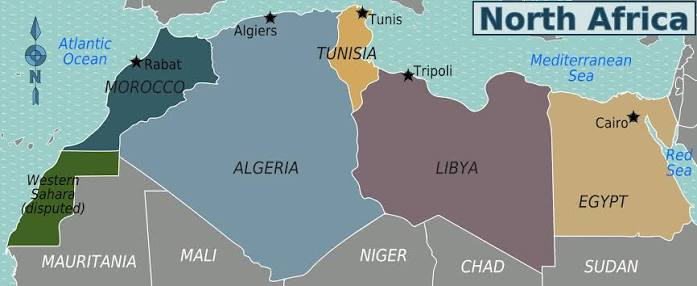
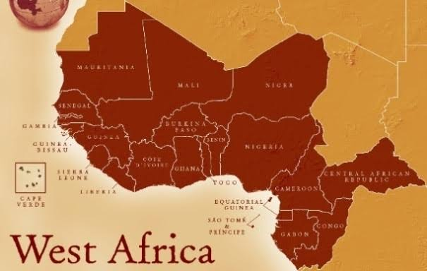
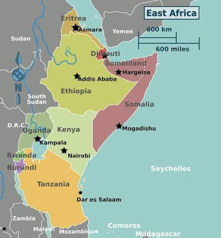
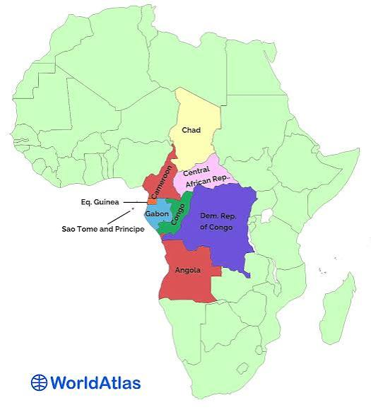
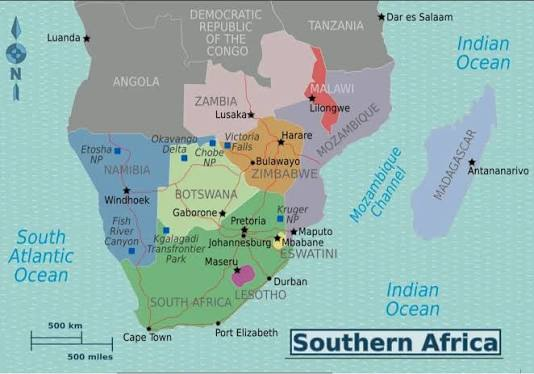

A Massive Continent: Africa is the second-largest continent on Earth, both in land size and population, making up about 20% of our planet's total land area.
An Incredibly Diverse Home: It is home to over 50 independent nations, thousands of distinct ethnic groups, and a massive variety of languages and cultural traditions.
The Cradle of Humanity: Archaeological evidence shows that Africa is the birthplace of early human beings, giving it a deeply rich history that goes back millions of years.
North Africa

Countries: Includes nations like Egypt, Libya, Algeria, Morocco, and Tunisia.
Climate: Heavily dominated by an arid desert climate, featuring extremely high daytime temperatures, very cool nights, and almost no annual rainfall.
Important Physical Features: Home to the massive Sahara Desert, the Nile River (the longest river in the world), and the rugged Atlas Mountains.
Interesting Fact: Due to the harsh desert environment, ancient and modern settlements have almost always been built right next to natural water sources, like the Nile River valley or desert oases.
West Africa

Location: Sits on the western "bulge" of the continent, bounded by the Atlantic Ocean to the west and south, blending into the Sahara Desert to the north.
Climate: Shifts dramatically from a dry, semi-arid environment in the north (the Sahel) to a warm, high-humidity tropical wet and dry climate further south.
Population Information: Highly populated and culturally vibrant. It contains Nigeria, the most populated country on the continent. Most people live in coastal cities or along fertile river valleys.
Interesting Fact: This region is historically famous for its massive trading empires, such as the ancient Mali and Ghana Empires, which grew incredibly wealthy trading gold and salt.
East Africa

Mount Kilimanjaro: The highest peak in Africa. A massive, dormant volcanic mountain topped with snow and glaciers, sitting very close to the equator.
Serengeti Plain: A giant, open ecosystem famous across the globe for hosting the "Great Migration" of millions of wildebeests, zebras, and gazelles.
Climate: Despite being near the equator, its high elevation gives it a surprisingly cooler, varied climate, ranging from dry savannas to cooler highlands.
Main Economic Activity: Agriculture is heavily prominent (coffee and tea), alongside a massive ecotourism sector generated by world-famous wildlife safaris.
Central Africa

Rainforest Environment: Centers around the massive Congo Basin, which holds the second-largest tropical rainforest in the world. It is incredibly dense, humid, and packed with unique plants.
Climate: Features a tropical wet climate (equatorial), meaning it stays hot, humid, and experiences heavy rainfall all year round without distinct seasonal changes.
Mountain Gorillas: The thick, high-altitude volcanic forests of this region serve as the rare and protected home of the endangered mountain gorilla.
Population Distribution: Because the deep rainforests are thick and difficult to navigate, populations cluster tightly along the major paths of the Congo River or live in major urban hubs.
Southern Africa

Climate: Highly varied. It ranges from the dry, coastal Namib and Kalahari deserts to mild, Mediterranean-style weather along the southern coasts.
Highveld Grasslands: A vast, high-altitude interior plateau covered in rolling grass plains that experience cool winters and warm summers—excellent for farming and livestock.
Madagascar: A large island nation located off the eastern coast with unique plants and animals found nowhere else on Earth due to millions of years of isolation.
Wildlife: The open savannas and protected parks are famous for hosting the "Big Five" (lions, leopards, rhinos, elephants, and buffaloes), drawing visitors from all over the world.